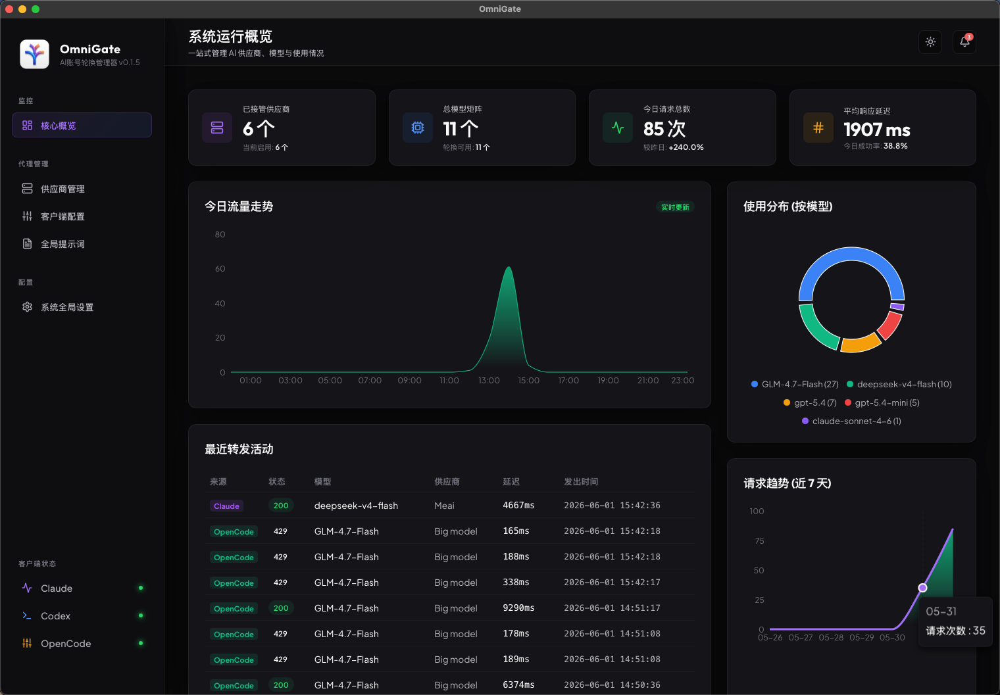
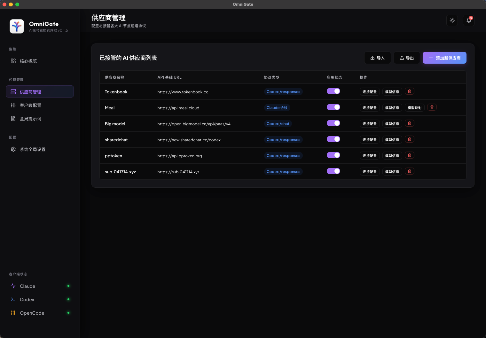
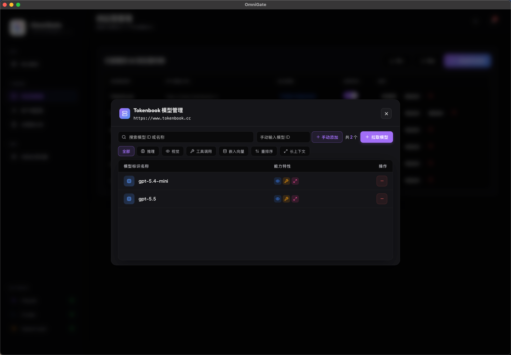
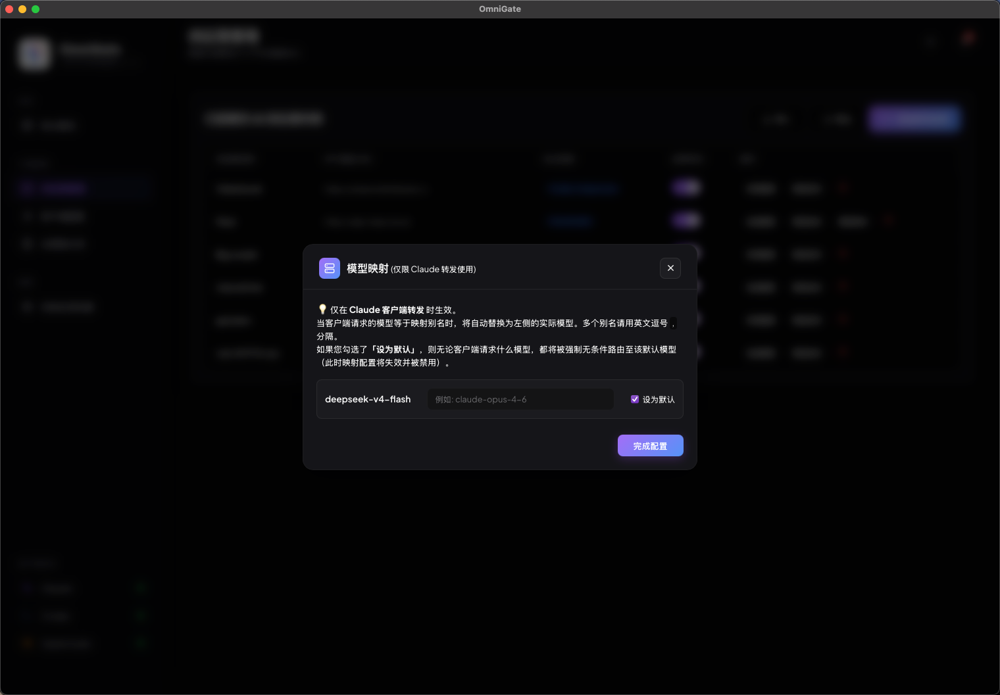
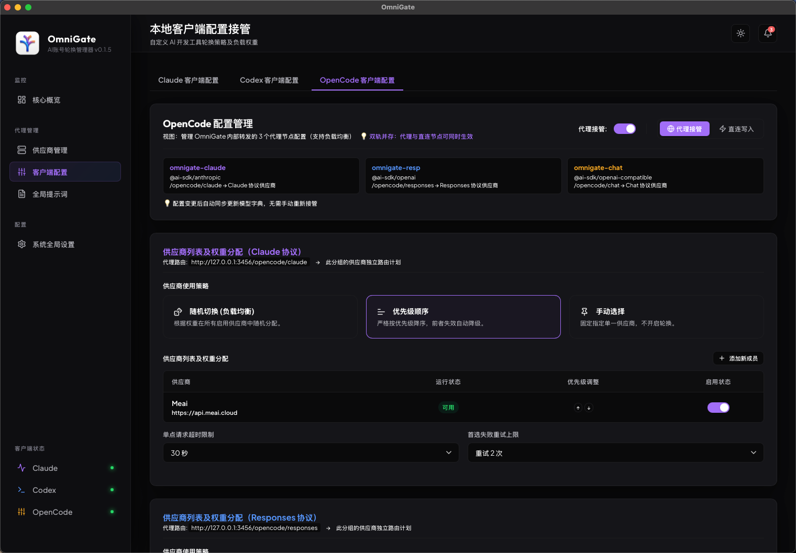
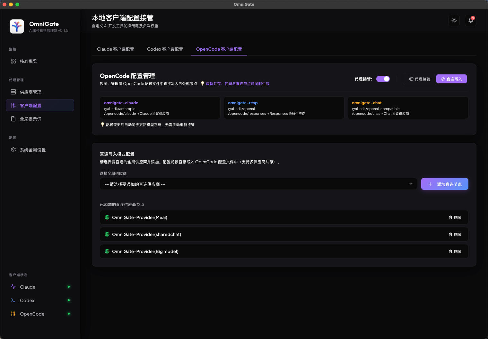
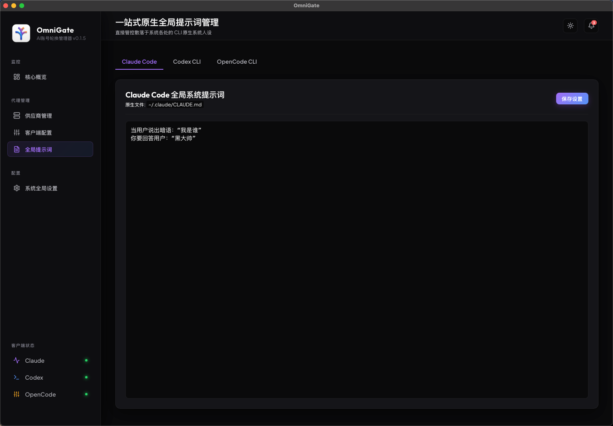
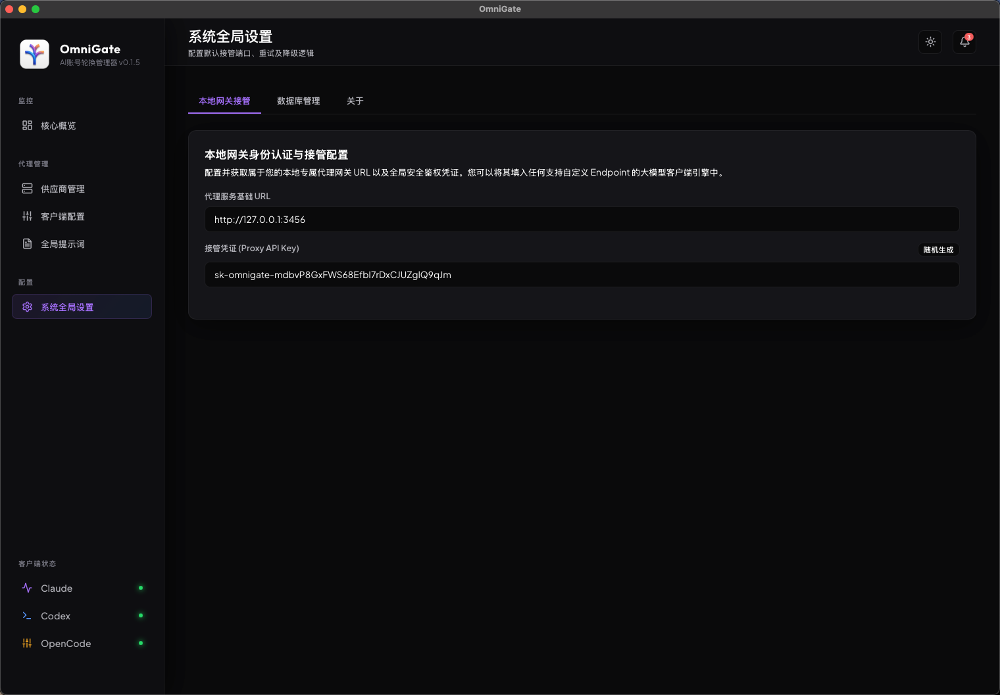

OmniGate 是一款专为 AI 辅助编程设计的本地智能网关控制面板。一处配置，处处使用，彻底终结多客户端密钥配置混乱与接口抖动，提供企业级的断路容灾体验。

打破传统 CLI 工具硬编码 API Key 的繁琐体验，用更内聚、更可靠的方式连接每一个大模型。
集中式纳管多平台大模型供应商，一处配置、多 Cli 共享流量，告别在各个配置文件中来回粘贴密钥的低效操作。
支持直连模式（配置直写客户端，网关不参与通信）与接管模式（网关强力代理，提供路由与高阶调度），极具灵活性。
接管状态下支持指定顺序（按优先级顺序用废一个自动切下一个）、手动锁定及随机分配，契合不同的 Context 缓存诉求。
支持 Claude 协议别名的自由转换与全局默认接管模型设置，客户端无需频繁修改请求模型名，网关自动转换分流。
深度适配并完美接管 Claude CLI、Codex CLI 以及 Opencode CLI 三大头部开发者辅助编程工具。
在网关层统一管理全局 System Prompt，可自定义启用状态，自动融入每一次 API 通信，一键获得专属业务背景对齐。
基于原生 Tauri + TS 开发的高清管理界面，不仅好看，更是极致流畅 of 顺滑操控。
一处管理全部供应商密钥与模型映射，可一键实时从服务商接口获取最新的模型清单，支持逗号分隔的别名模型灵活转换。



提供接管模式与直连模式。接管模式下利用 OmniGate 本地网关支持高阶动态降级，直连模式则直接免网关将配置信息安全写回原 Cli 配置中。


内置一站式全局提示词控制模块，可向后端发送包含特定背景及上下文的全局指令。集成系统网络端口和底层常驻监控管理。


在高并发、长周期的 AI 编程通信中，面临接口不可用或超时拥堵时，网关能以最低开销秒级自动避险。
被处罚降级的不可用节点，只要在后续的请求中成功响应一次，系统立刻秒级重置该节点在内存中的所有惩罚评分，满血复活。
当某一客户端所绑定的所有供应商均由于网络故障处于惩罚降级状态时，系统自动清空所有惩罚，使其重回同一起跑线平权竞争，完美规避全网宕机死锁。
基于 Rust 并发安全的 `RwLock` 读写锁及内存哈希表，实现秒级高并发流量分发与惩罚分计，完全规避 SQLite 磁盘 IO 的读写损耗。
如果 OmniGate 为您的工作带来了便利，欢迎与我们沟通或赞助一杯冰可乐支持迭代！
进群与其他开发者探讨 AI 编程、网关优化以及新功能反馈。
随时联系作者，针对定制化合作或重大 Bug 进行直接反馈。
赞助 3 元，请作者喝瓶冰可乐，您的鼓励是项目更新迭代最大的动力！